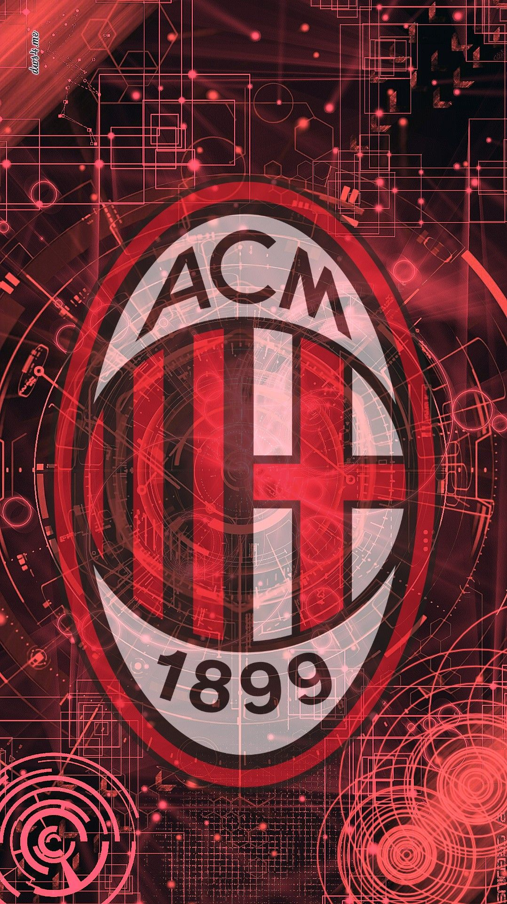
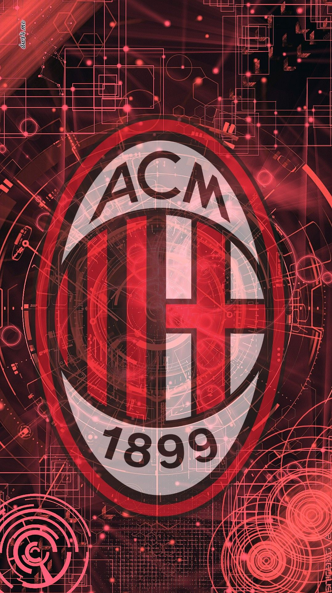

ROSA DEL MILAN : ETÀ, NAZIONALITÀ E DETTAGLI SU ALCUNI I GIOCATORI
I CENTROCAMPISTI
GLI ATTACCANTI
Classificazione dei giocatori del Milan
 

Scopriamo tutti i dettagli sui giocatori che compongono la rosa del Milan
Pur avendo una rosa tra le più giovani della Serie A TIM e, almeno tra le squadre al vertice, anche nei cinque grandi campionati europei, il Milan di Stefano Pioli sembra aver iniziato un nuovo ciclo.
Che sia scudetto o meno, per la seconda stagione consecutiva il Milan si è qualificato alla Champions League dopo otto anni consecutivi di assenza e l'obiettivo primario per la squadra rossonera è stato dunque centrato. Ormai però è da due stagioni e mezza che il rendimento è da squadra d'élite in Italia.
La dirigenza ha costruito - e sta costruendo - una rosa competitiva con colpi mirati, assorbendo uscite dolorose a parametro zero negli ultimi anni, ma avendo trovato sostituti all'altezza e funzionali al calcio moderno del proprio allenatore.
I ruoli chiave in cui il Milan può migliorare sono diversi, soprattutto in attacco dove i gol spesso faticano ad arrivare, ma è dal reparto difensivo che la società ha iniziato a costruire i propri successi trovando un portiere affidabile come Maignan e un difensore fisico e veloce come Tomori.
Il rebus per il futuro resta dunque l'attacco. Serve un centravanti da 20 gol o comunque che sappia garantire una certa continuità vicino alla porta, ma anche sulla trequarti il Milan può fare di più.
I PORTIERI
I rossoneri possono vantare tre portieri di esperienza, ma le chiavi della porta del Milan sono state affidate alla verà sorpresa di questa stagione: Mike Maignan. Il suo vice è l'ex Fiorentina Ciprian Tatarusanu, mentre il terzo portiere è l'esperto Antonio Mirante.
| Numero | Nome | Data di nascita | Nazionalità | Stipendio | >Scadenza contratto |
| 16 | Mike Maignan | 03/07/1995 | Francia | 2.8 milioni | 2026 |
| 1 | Ciprian Tatarusanu | 09/02/1986 | Romania | 1.2 milioni | 2023 |
| 83 | Antonio Mirante | 08/07/1983 | Italia | 0.9 milioni | 2022 |
| 23 | Fikayo Tomori | 19/12/1997 | Inghilterra | 2 milioni | 2025 |